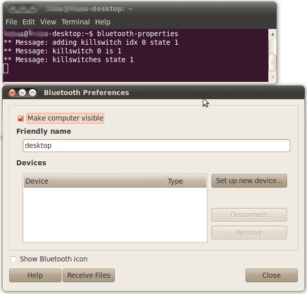
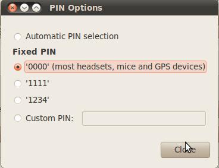
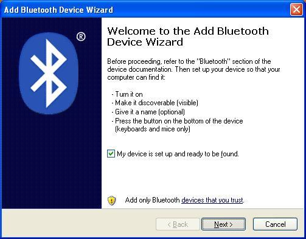

Bluetooth Bee is an easy to use Bluetooth Serial Port Profile(SPP) module compatible with existing Xbee sockets, designed for transparent wireless serial connection setup. Serial port Bluetooth module is fully qualified Bluetooth V2.0+EDR(Enhanced Data Rate) 3Mbps Modulation with complete 2.4GHz radio transceiver and baseband. It uses CSR Bluecore 04-External single chip Bluetooth system with CMOS technology and with AFH(Adaptive Frequency Hopping Feature). It has the smallest footprint of 12.7mm x 27mm. Hope it will simplify your overall design/development cycle for форекс брокеры.
Model:WLS125E1P
http://www.seeedstudio.com/depot/images/product/bbee_LRG.jpg
Bluetooth Bee Schematic and Board Files in Eagle Format refrigerated transport services from APS freight company
Bottom-view:
| Pin | # | Pad Type | Description |
|---|---|---|---|
| PIO9 | 29 | Bi-Direction | Programmable input/output line |
| PIO8 | 28 | Bi-Direction | Programmable input/output line |
| PIO7 | 27 | Bi-Direction | Programmable input/output line |
| PIO6 | 26 | Bi-Direction | Programmable input/output line |
| RTS | 25 | CMOS output, tri-stable with weak internal pull -up | UART request to send, active low |
| PIO5 | 24 | Bi-Direction | Programmable input/output line |
| PIO4 | 23 | Bi-Direction | Programmable input/output line |
| PCMSY | 22 | Bi-Direction | Synchronous PCM data strobe |
| CTS | 21 | CMOS output, tri-stable with weak internal pull -up | UART clear to send, active low |
| PIO3 | 20 | Bi-Direction | Programmable input/output line |
| PIO2 | 19 | Bi-Direction | Programmable input/output line |
| USBDP | 18 | Bi-Direction | |
| USBDN | 17 | Bi-Direction | |
| CLK | 16 | CMOS output, tri-stable with weak internal pull -up | SPI(Serial peripheral interface) clock |
| MI | 15 | CMOS output, tri-stable with weak internal pull -up | SPI data output |
| MO | 14 | CMOS output, tri-stable with weak internal pull -up | SPI data output |
| CS | 13 | CMOS output, tri-stable with weak internal pull -up | Chip select for serial peripheral interface, active low |
| AIO1 | 12 | Bi-Direction | Programmable input/output line |
| AIO0 | 11 | Bi-Direction | Programmable input/output line |
| GND | 10 | VSS | Ground port |
| PCMIN | 9 | CMOS input | Synchronous PCM data input |
| PCMOT | 8 | CMOS output | Synchronous PCM data output |
| PCMCK | 7 | Bi-Direction | Synchronous PCM data clock |
| PIO1 | 6 | Bi-Direction | Programmable input/output line |
| !RST | 5 | CMOS input with weak internal pull-up | Reset if low,input must be low for >5ms to cause a reset |
| PIO0 | 4 | Bi-Direction | Programmable input/output line |
| RX | 3 | CMOS input with weak internal pull-up | UART Data input |
| TX | 2 | CMOS output,tri-stable with weak internal pull-up | UART Data output |
| 3V3 | 1 | 3.3V | Integrated 3.3V(+)supply with on-chip linear regulator output within 3.15-3.3V |
Bluetooth Bee board is of 12.7mm x 27mm size.
Use a XBee® Shield to connect Bluetooth Bee to Seeeduino / Arduino. Refer the XBee® Shield documentation on how to set the toggle switches to correct positions.

Use an UartSBee to connect Bluetooth Bee to PC. Set the power selection toggle switch to 3.3V before connecting BlueTooth Bee.

The following sketch presents an overview of Bluetooth Bee operation in master and slave mode.
The following flowchart gives a quick start guide to Bluetooth Bee programming.

1. Set working MODE
| \r\n+STWMOD=0\r\n | Set device working mode as client (slave). Save and Rest. |
| \r\n+STWMOD=1\r\n | Set device working mode as server (master). Save and Rest. |
Note: \r\n is necessary for operation and the value of are 0x0D 0x0A in Hex. \r and \n represent carriage-return and line-feed(or next line),
2.Set BAUDRATE
| \r\n+STBD=115200\r\n | Set baudrate 115200. Save and Rest. |
| Supported baudrate: 9600, 19200,38400,57600,115200,230400,460800. | |
3. Set Device NAME
| \r\n+STNA=abcdefg\r\n | Set device name as “abcdefg”. Save and Rest. |
4. Auto-connect the last paired device on power
| \r\n+STAUTO=0\r\n | Auto-connect forbidden. Save and Rest. |
| \r\n+STAUTO=1\r\n | Permit Auto-connect. Save and Rest. |
5. Permit Paired device to connect me
| \r\n+STOAUT=0\r\n | Forbidden. Save and Rest. |
| \r\n+STOAUT=1\r\n | Permit. Save and Rest. |
6. Set PINCODE
| \r\n +STPIN=2222\r\n | Set pincode “2222”, Save and Rest. |
7. Delete PINCODE(input PINCODE by MCU)
| \r\n+DLPIN\r\n | Delete pincode. Save and Rest. |
8. Read local ADDRESS CODE
| \r\n+RTADDR\r\n | Return address of the device. |
9. Auto-reconnecting when master device is beyond the valid range (slave device will auto-reconnect in 30 min when it is beyond the valid range)
| \r\n+LOSSRECONN=0\r\n | Forbid auto-reconnecting. |
| \r\n+LOSSRECONN=1\r\n | Permit auto-reconnecting. |
1. Inquire
| a) Master | |
| \r\n+INQ=0\r\n | Stop Inquiring |
| \r\n+INQ=1\r\n | Begin/Restart Inquiring |
| b) Slave | |
| \r\n+INQ=0\r\n | Disable been inquired |
| \r\n+INQ=1\r\n | Enable been inquired |
When +INQ=1 command is successful, the red and green LEDS blink alternatively.
2. Bluetooth module returns inquiring result
| \r\n+RTINQ=aa,bb,cc,dd,ee,ff;name\r\n | Serial Bluetooth device with the address “aa,bb,cc,dd,ee,ff” and the name “name” is inquired |
3. Connect device
| \r\n+CONN=aa,bb,cc,dd,ee,ff\r\n | Connect to a device with address of "aa,bb,cc,dd,ee,ff” |
4. Bluetooth module requests inputting PINCODE
\r\n+INPIN\r\n
5. Input PINCODE
| \r\n+RTPIN=code\r\n | |
| Example: RTPIN=0000 | Input PINCODE which is four zero |
6. Disconnect device Pulling PIO0 high will disconnect current working Bluetooth device.
7. Return status \r\n+BTSTA:xx\r\n
xx status:
(Note: This is not a command, but the information returned from the module after every command)
The following sketch configures Bluetooth Bee for Transportunternehmen as Slave Device and waits for connection request from PC or other master device. Bluetooth Bee is connected to Seeeduino via XBee Shield as shown above. Bluetooth Bee is connected to digital Pins 11 and 12 of Arduino / Seeduino. We use NewSoftSerial library for supporting serial communication on these pins. The hardware serial port of Arduino is available for uploading sketch or debugging. This sketch uses a flow control mechanism using CheckOK(). It avoids using arbitrary delay between each command. If CheckOK() is not required, use a delay of at least 3 seconds between commands.
/* BluetoothBee Demo Code - Flowcontrol Based Implementation 2010,2011 Copyright (c) Seeed Technology Inc. All right reserved. Author: Visweswara R This demo code is free software; you can redistribute it and/or modify it under the terms of the GNU Lesser General Public License as published by the Free Software Foundation; either version 2.1 of the License, or (at your option) any later version. This library is distributed in the hope that it will be useful, but WITHOUT ANY WARRANTY; without even the implied warranty of MERCHANTABILITY or FITNESS FOR A PARTICULAR PURPOSE. See the GNU Lesser General Public License for more details. You should have received a copy of the GNU Lesser General Public License along with this library; if not, write to the Free Software Foundation, Inc., 51 Franklin St, Fifth Floor, Boston, MA 02110-1301 USA For more details about the product please check http://www.seeedstudio.com/depot/ */ /* Upload this sketch to Seeeduino and press reset*/ #include <SoftwareSerial.h> //Software Serial Port #define RxD 11 #define TxD 12 #define DEBUG_ENABLED 1 SoftwareSerial blueToothSerial(RxD,TxD); void setup() { pinMode(RxD, INPUT); pinMode(TxD, OUTPUT); setupBlueToothConnection(); } void loop() { //Typical Bluetoth command - response simulation: //Type 'a' from PC Bluetooth Serial Terminal //See Bluetooth Bee - Wiki for instructions if(blueToothSerial.read() == 'a') { blueToothSerial.println("You are connected"); //You can write you BT communication logic here } } void setupBlueToothConnection() { blueToothSerial.begin(38400); //Set BluetoothBee BaudRate to default baud rate 38400 delay(1000); sendBlueToothCommand("\r\n+STWMOD=0\r\n"); sendBlueToothCommand("\r\n+STNA=SeeeduinoBluetooth\r\n"); sendBlueToothCommand("\r\n+STAUTO=0\r\n"); sendBlueToothCommand("\r\n+STOAUT=1\r\n"); sendBlueToothCommand("\r\n +STPIN=0000\r\n"); delay(2000); // This delay is required. sendBlueToothCommand("\r\n+INQ=1\r\n"); delay(2000); // This delay is required. } //Checks if the response "OK" is received void CheckOK() { char a,b; while(1) { if(blueToothSerial.available()) { a = blueToothSerial.read(); if('O' == a) { // Wait for next character K. available() is required in some cases, as K is not immediately available. while(blueToothSerial.available()) { b = blueToothSerial.read(); break; } if('K' == b) { break; } } } } while( (a = blueToothSerial.read()) != -1) { //Wait until all other response chars are received } } void sendBlueToothCommand(char command[]) { blueToothSerial.print(command); CheckOK(); }
The following sketch is a modification of above program using delay() instead of CheckOK(). In this case the hardware serial port is used for debugging purpose. Open serial monitor with setting 9600 baud. The complete communication between MCU and Bluetooth Bee will be visible in serial monitor.
/* BluetoothBee Demo Code - Delay Based Implementaion 2011 Copyright (c) Seeed Technology Inc. All right reserved. Author: Visweswara R This demo code is free software; you can redistribute it and/or modify it under the terms of the GNU Lesser General Public License as published by the Free Software Foundation; either version 2.1 of the License, or (at your option) any later version. This library is distributed in the hope that it will be useful, but WITHOUT ANY WARRANTY; without even the implied warranty of MERCHANTABILITY or FITNESS FOR A PARTICULAR PURPOSE. See the GNU Lesser General Public License for more details. You should have received a copy of the GNU Lesser General Public License along with this library; if not, write to the Free Software Foundation, Inc., 51 Franklin St, Fifth Floor, Boston, MA 02110-1301 USA For more details about the product please check http://www.seeedstudio.com/depot/ */ /* Upload this sketch into Seeeduino and press reset*/ #include <SoftwareSerial.h> //Software Serial Port #define RxD 11 #define TxD 12 SoftwareSerial blueToothSerial(RxD,TxD); void setup() { Serial.begin(9600); //Serial port for debugging, Comment this line if not required pinMode(RxD, INPUT); pinMode(TxD, OUTPUT); setupBlueToothConnection(); } void loop() { if(blueToothSerial.read() == 'a') { blueToothSerial.println("You are connected to Bluetooth Bee"); //You can write you BT communication logic here } } void setupBlueToothConnection() { Serial.print("Setting up Bluetooth link"); //For debugging, Comment this line if not required blueToothSerial.begin(38400); //Set BluetoothBee BaudRate to default baud rate 38400 delay(1000); sendBlueToothCommand("\r\n+STWMOD=0\r\n"); sendBlueToothCommand("\r\n+STNA=modem\r\n"); sendBlueToothCommand("\r\n+STAUTO=0\r\n"); sendBlueToothCommand("\r\n+STOAUT=1\r\n"); sendBlueToothCommand("\r\n+STPIN=0000\r\n"); delay(2000); // This delay is required. blueToothSerial.print("\r\n+INQ=1\r\n"); delay(2000); // This delay is required. Serial.print("Setup complete"); } void sendBlueToothCommand(char command[]) { char a; blueToothSerial.print(command); Serial.print(command); //For debugging, Comment this line if not required delay(3000); while(blueToothSerial.available()) //For debugging, Comment this line if not required { //For debugging, Comment this line if not required Serial.print(char(blueToothSerial.read())); //For debugging, Comment this line if not required } //For debugging, Comment this line if not required }
This procedure demonstrates how Bluetooth Bee can be connected to PC under GNU/Linux OS. An USB Bluetooth Dongle is used at PC side to communicate with Bluetooth Bee. The flow control implementation sketch is uploaded to Seeeduino.
sudo apt-get install gnome-bluetooth

and click Forward

and
Setup Completed dialog opens. Click Close.
user@user-desktop:~$ sudo rfcomm bind 0 00:13:EF:00:00:24 1
user@user-desktop:~$ ls /dev/rfcomm*
/dev/rfcomm0


This demo uses hardware arrangement described in Hardware Installation - UartSBee. Connect UartSbee to PC using a mini USB cable.
Please list your questions here:
If you have questions or other better design ideas, you can go to our forum or wish to discuss.
| Revision | Descriptions | Release |
|---|---|---|
| v1.0 | Initial public release | Dec 14, 2009 |
| v1.1 | Modify Inquire command and add some notes | Mar 15, 2010 |
| v1.2 | Modify Hardware and Software features | Apr 04, 2010 |
| v1.3 | Update the profile, add the return status, delete ECHO command. | Apr 21, 2010 |
| v2.0 | Update the module as HM－01（The same with the newest Bluetooth shield）. The AT command can not compatible with before. | Dec 4, 2014 |
Bug Tracker is the place you can publish any bugs you think you might have found during use. Please write down what you have to say, your answers will help us improve our products.
Click here to buy:http://www.seeedstudio.com/depot/bluetooth-bee-p-598.html?cPath=139_142.
This documentation is licensed under the Creative Commons Attribution-ShareAlike License 3.0 Source code and libraries are licensed under GPL/LGPL, see source code files for details.
Links to external webpages which provide more application ideas, documents/datasheet or software libraries
If you want to make some awesome projects by Bluetooth Bee, here's some projects for reference.
This is an interesting demo made by seeduino and Grove. SEEED PET is kind of an electronic pet in our studio. It is a platform for the newbie engineers to be familiar with our company’s products and practice. Every newbie engineer will be added some new ideas or elements on the SEEED PET.
Born with the spirit of making and sharing, that is what we believe makes a maker.
And only because of this , the open source community can be as prosperous as it is today.
It does not matter what you are and what you have made, hacker, maker, artist and engineers,
as long as you start sharing your works with others,
you are being part of the open source community and you are making your contributions .
Now share you awesome projects on with us on Recipe, and win a chance to become the Core User of Seeed.
Get more information about Core User please email to: recipe@seeed.cc
{kind=link}